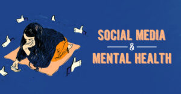
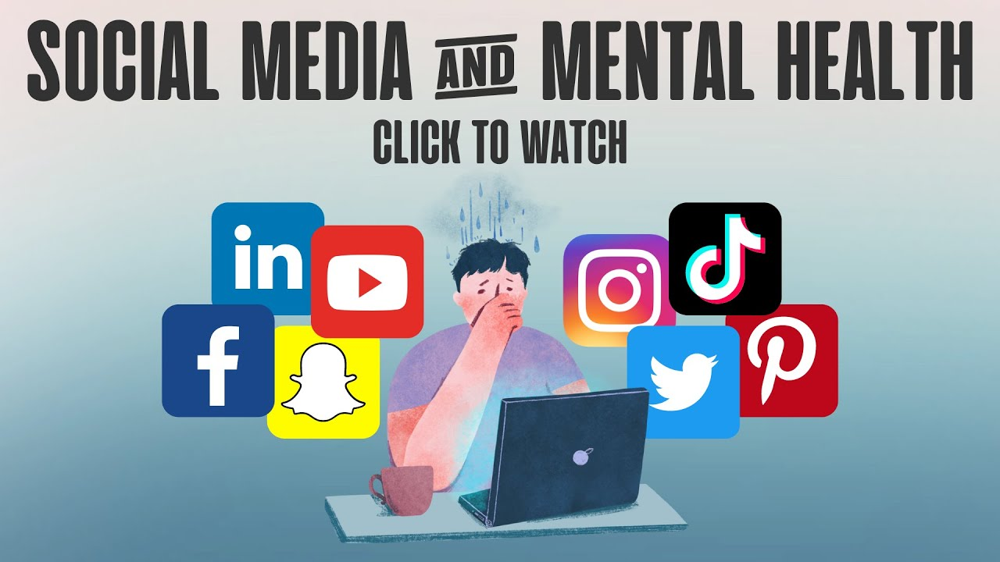

How Social Media Shapes Adolescents Minds
Postive Ways Teens are Impacted
Social media has made an impact not only on society as a whole,but especially adolescents.Social media has made it easier to communicate, connect, and share memories and or updates. There is a sense of longing that people feel when they form relationships online.There story or content may make a diffrence around the world, while breaking geographical barriers as well. The various platforms help bring togther those who share the same interests and goals.There is good in social media, the various platfforms provide creativity, activism,education and a sense of belonging. Social media also influences ones business and how well it succeeds in todays modern society.
Negative Ways Society and Teens are Impacted
Social media has many good attributes to it with that being said it also comes with negativity. Although social media is the new way for people to connect it comes with its pros and cons as well. Such as depression, anxiety, bullying, and peer pressure. Many teens and even adults feel the need to keep up with the latest trends and memes. If they dont they feel as though they aren't good enough, this isn't a great feeling to have. Teens feel the brunt of the negativity as they are to keep up with the latest makeup trends, hair, and image. Just because a person is flashing money, buying expensive bags, and driving the most expensive cars we don't know the truth behind it. Is that really reality or are they putting on a facade to impress society. I have seen fake influencers gloating about there top of the line bags and how rich they are. In reality they are broke, racking up credit card debt, and renting cars. Its hard to be ones authentic self when the whole world is trying to influence you. One wrong video uploaded can make a innocent sweet down to earth perosn a villian. As we watch videos on social media we dont know the context of said video. I find alot of people automatically jump to a conclusion or opinion without reading hashtags or tags. Society makes up there on narrative leaving a innocent person the next meme and viral sensation, even if it's negative. Modern times have changed and it's hard to know what is real, who is real, and one's intentions in today's society.
Educational Impact
Social media influences how Adolescents pick and choose what college, major, or sorority one chooses. I can scroll any social media platform and will see very different pages dedicated to which schools, sororities, and colleges people believe everyone should attend. Although, colleges and institutions can market there schools better it also gives members of scoiety different views based on different opinions that can lead to false hopes. For example if a student acts crazy at a basketball game at a college and it gets posted to social media this can inadvertley give society a bad impression and they may feel as if everyone that attends that school acts that way. If used wisely social media can be a safe outlet to explore different education, colleges, and majors.
 
explore the topic
social media mental healthinfluence of scoial outlets